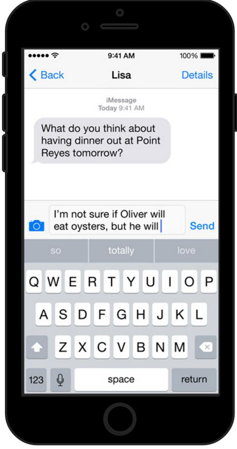
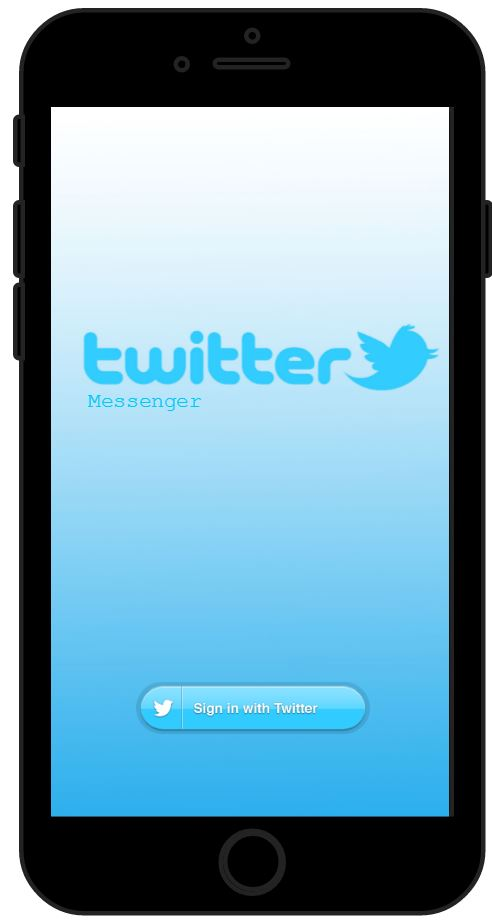
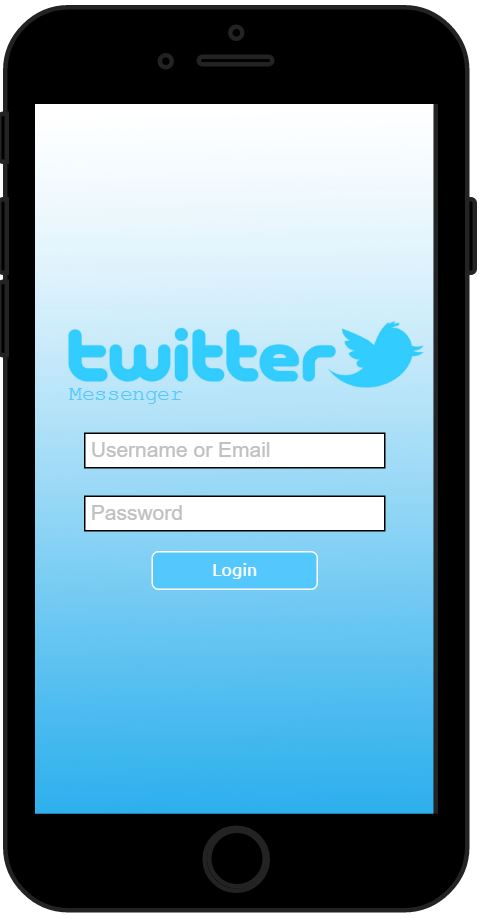
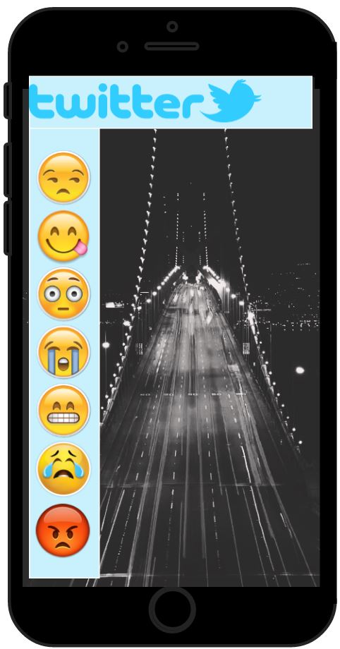
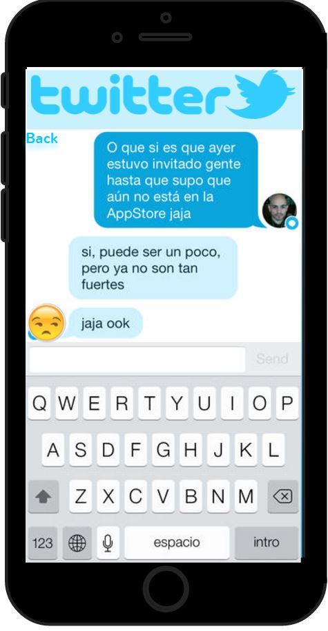

The Social Media Mockup was the first project assigned. This project was a reflection of what students learned about the Design Process. Throughout the unit we brainstormed different problems on social medias. My problem that i focused on what a twitter messenger app. Using Mockups I designed my own twitter messenger app.
This is the Homepage for my design. Clicking the "home" button on the iphone takes you to this page every time. If you look closley on the Homepage you can spot my Twitter Messenger icon which i designed on photoshop.
Each app on my Homescreen had a hyperlink connected to it, which took you to another page. For example, the Messenger app took you to a page with messenger open. Every app on my screen did this, if it didn't go to the actual app it would "crash" the phone and take you to a crashed screen which said to press the home button to go back home.
This is the first screen you see when you click the Twitter Messenger app. I made all of the images to fit this Mockup on photoshop.
When you click log in, it shows a place to enter your username and password, and then when you click sumbit it takes you to.....
This is the main page for the Twitter messenger app. Each emoticon is clickable and when clicked on it takes you to....
This is what a twitter messenger chat would typically look like. I made it so that the emoticon represented what your contact had. So you could customize it so that each of your Contacts had a set emoji.
I think the purpose of the Assignment was to improve the way students think about design and to show students how to apply their design process onto a multimedia platform.
I liked how we used a program that was simple to get the hang of once you spent some time using it.
I found thinking of a problem, finding a way to solve it and then applying my idea to Mockups difficult
I wouldn't really change the assignment.